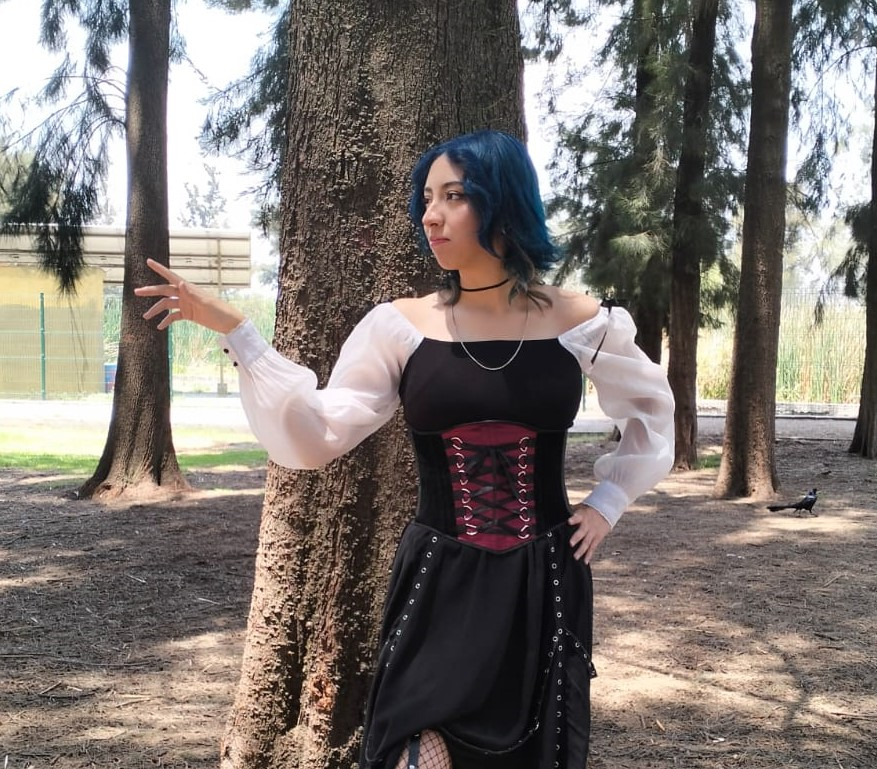
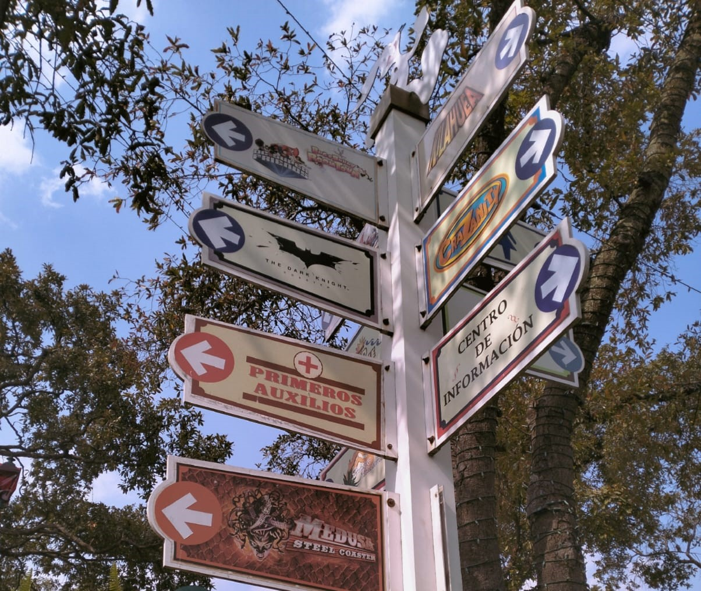
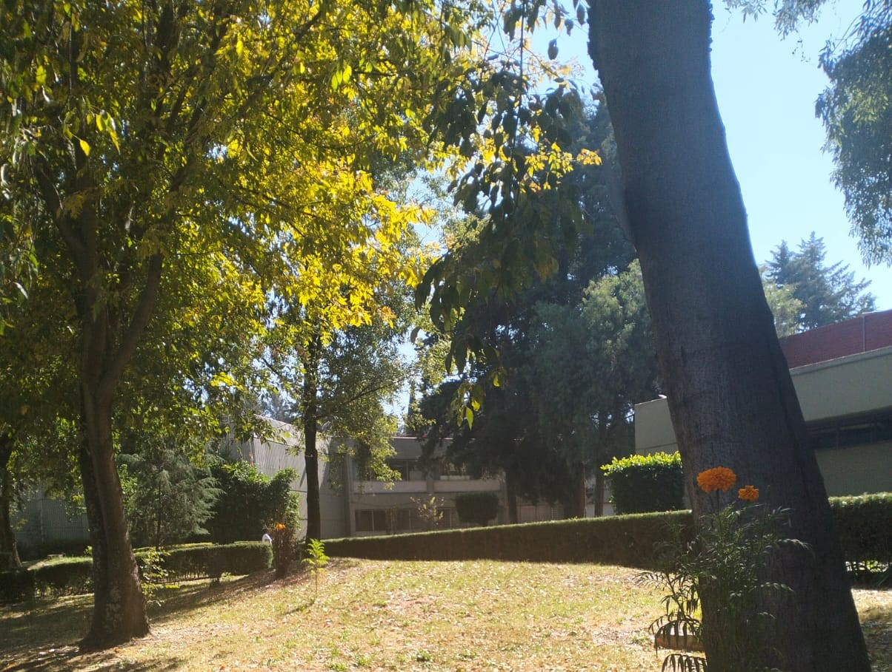

En esta sección encontrarás una selección de mis trabajos fotográficos, donde experimento con composición, iluminación, edición y captura de momentos naturales. Cada proyecto refleja mi estilo visual y mi evolución dentro del mundo de la fotografía.

Sesiones realizadas utilizando ajustes manuales de cámara, explorando apertura, velocidad de obturación e ISO para lograr diferentes estilos visuales. Incluye práctica en enfoque, profundidad de campo y control de luz para obtener imágenes más expresivas.

Proceso de postproducción utilizando herramientas como Lightroom y Photoshop, aplicando correcciones de color, contraste, exposición y limpieza digital. El objetivo es potenciar la atmósfera sin perder la esencia de la toma original.

Fotografía enfocada en capturar escenas espontáneas y momentos auténticos sin poses forzadas. Se trabaja con luz natural, expresiones reales y ambientes cotidianos para transmitir emociones genuinas a través de cada imagen.